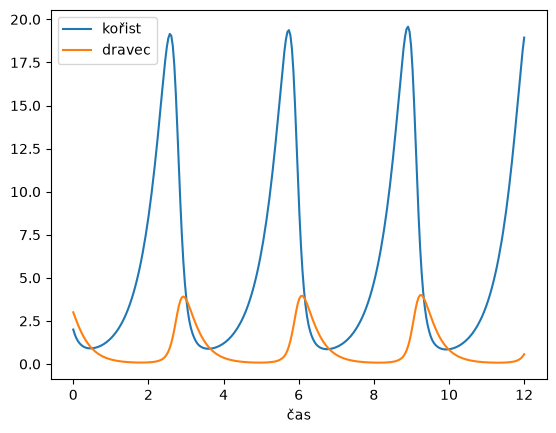

24. Modely dravce a kořisti#
import numpy as np
import matplotlib.pyplot as plt
import pandas as pd
from scipy.integrate import solve_ivp
24.1. Lotkův a Volterrův model dravce a kořisti#
Nakreslete řešení Lotkova a Volterrova modelu dravce a kořisti.
Pokud pro nějaké nastavení parametrů není přehledné kreslit křivky pro kořist
obě do jednoho grafu, můžeme každou křivku nakreslit do samostatného grafu.
Modifikujte následující kód a použijte pro kreslení parametry příkazu
subplots, viz ukázka. Výsledkem nechť je
dvojice grafů, v jednom nechť je graf vývoje populace dravce, ve druhém graf
vývoje populace kořisti. Časová osa nechť je sdílená pro oba grafy.
## Prostor pro řešení
def prey(x,y,a=1,b=1):
return a*x - b*x*y
def predator(x,y,c=1,d=0.5):
return -c*y+d*x*y
def model(t,X,a=1,b=1,c=1,d=0.5):
x,y = X
return [prey(x,y,a,b),predator(x,y,c,d)]
meze = [0,12]
pocatecni_podminka = [2,3]
xmax = 6
ymax = 3
fig,ax = plt.subplots()
t = np.linspace(*meze, 300)
sol = solve_ivp(
lambda t,X:model(t,X, a=2, b=2, c=3, d=.5),
meze, # interval pro reseni
pocatecni_podminka, # pocatecni podminka
t_eval=t
)
ax.plot(t, sol.y.T)
ax.set(xlabel = 'čas')
ax.legend(['kořist', 'dravec'])
plt.show()

Modifikujte předchozí kód tak, aby byla populace dravce i kořisti ve stejném
obrázku, ale každá funkce měla svou svislou osu. Ukázka této techniky a využití
příkazu twinx je v přednášce s numerickou derivací.
## Prostor pro řešení
Pokuste se obrázky doplnit tak, aby z nich bylo zřejmé, jestli perioda řešení souvisí či nesouvisí s počáteční podmínkou. Nakreslete do stejného obrázku řešení s další počáteční podmínkou.
24.2. Model dravce a kořisti s Hollingovou trofickou funkcí#
Zopakujte předchozí kroky pro Rosenzweigův a MacArthurův model s Hollingovou trofickou funkcí.
def predator(x,y):
return -0.04*y + .1*x*y/(4+x)
def prey(x,y):
return (1-x/10)*x-.3*x*y/(4+x)
def model(t,X):
x,y = X
return [prey(x,y),predator(x,y)]
meze = [0,100]
pocatecni_podminka = [2,12]
xmax = 10
ymax = 20
## atd .... Prostor pro řešení
24.3. Model dravce a dvou populací kořisti#
Pokuste se namodelovat následující situaci.
V ekosystému dochází ke konkurenci dvou populací a jedna z populací je konkurencí vyloučena.
Přítomnost predátora redukuje velikosti obou populací tak, že se dominance silnější populace neprojeví. Tím predátor zprostředkovává přežití populace, která mu současně slouží jako kořist. Odstranění predátora z ekosystému by paradoxně způsobilo vymření jeho kořisti.
Snažte se o co nejjednodušší model. Například modifikujte model z přednášky pro konkurenci tří populací tak, aby třetí populace nebyla konkurentem, ale predátorem.
## Prostor pro řešení